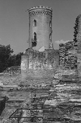

- dracul -
|
He briefly regained the throne in 1475 after years of "imprisonment" in Hungary, but finally met his end in 1476 by an assassin's hand. . The Turks were defeated and in their retreat Dracul was swept from the throne. He regained it in 1443 with the help of the Turks, with whom he had signed a new alliance. The sultan doubted Dracul's loyalty, though, and demanded he leave two of his sons, Vlad and Radu in the sultan's court. |
|  |
This man single handedly impaled and cooked people to their miserable deaths. He lived from 1431 to 1476 and throughout his life he was ruler of Wallachia three different times. He was born in the Transylvania town of Sighisoara, son of the formidable Vlad Dracul, Prince of Wallachia. By 1462 the wrath of the Ottomans was felt in Wallachia. After death, however, Vlad assumed a definitive role in the legends of Romania, as wild rumors erupted about his demise and his corpse. |
|
This man single handedly impaled and cooked people to their miserable deaths. He lived from 1431 to 1476 and throughout his life he was ruler of Wallachia three different times. He was born in the Transylvania town of Sighisoara, son of the formidable Vlad Dracul, Prince of Wallachia. By 1462 the wrath of the Ottomans was felt in Wallachia. After death, however, Vlad assumed a definitive role in the legends of Romania, as wild rumors erupted about his demise and his corpse. |
|
Thanks and remember, more links will be added once they are found. . - 1447) Vlad Dracul was the father of Vlad the Impaler (1430-1477), the person who has been identifed as the historical Dracula. He was the illegitimate son of Prince Mircea, the ruler of Wallachia, that area of present-day Romania south of teh Carpathian Mountains. His mother migh have been Princess Mara of the Tomaj family of Hungary. |
A site I really like: http://www.opa.com/vampire/Dracula.html